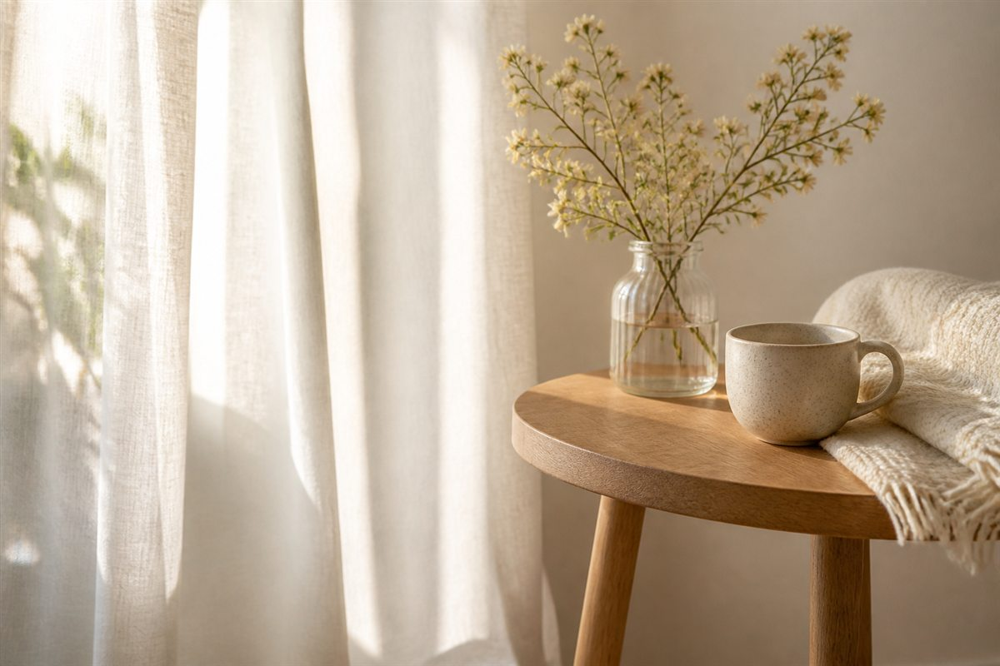

≈ 1 sesión
Colabora
Haz posible que otra madre pueda recorrer este camino
Hay madres que desean participar en Mamás de Cielo y Tierra para encontrar acompañamiento en su duelo, pero para las que el coste del programa puede suponer una dificultad.
Tu aportación puede ayudar a facilitar parcial o totalmente su acceso al programa.
Parte de los beneficios por la venta del Manual de acompañamiento están siendo destinados a la misma causa.

¿Qué parte del camino quieres hacer posible?
Cada aportación ayuda a financiar una parte del recorrido o, si lo deseas, una plaza completa.
≈ 2 sesiones
≈ Medio programa
Una plaza completa
Puedes colaborar con la cantidad que tú decidas. Las cifras son una referencia del programa compartido; en las modalidades privadas, la aportación se aplicará según el importe acordado y las necesidades recibidas.
¿Cómo funciona?
Eliges tu aportación
Puedes colaborar con la cantidad que desees.
Tu aportación ayuda a financiar plazas
Las aportaciones pueden facilitar total o parcialmente el acceso al programa, tanto en grupo como en sus modalidades privadas, según las necesidades recibidas.
Ayudas a hacer posible su participación
Mamás de Cielo y Tierra gestiona estas ayudas y su asignación en función de las necesidades de cada caso.
Aportación
Haz tu aportación
Tu colaboración puede ayudar a que una madre o un matrimonio accedan al programa cuando el coste sea una dificultad.
Aportación: LIBRE
- Haz una aportación puntual del importe que consideres.
- No necesitas vincularla a una madre concreta.
- Contribuye a sostener plazas parciales o completas según las necesidades recibidas.
Proceso seguro y cifrado. Sin sorpresas.
Transparencia
Una ayuda destinada a facilitar el acceso
Las aportaciones recibidas a través de esta iniciativa pueden facilitar parcial o totalmente el acceso al programa Mamás de Cielo y Tierra, en grupo o en modalidad privada individual o para matrimonios, según las necesidades recibidas.
La asignación de estas ayudas se realiza en función de las necesidades de cada caso y de los fondos disponibles.
A veces, acompañar también significa hacer posible que alguien pueda ser acompañado.
Gracias por contribuir a que una dificultad económica no tenga que ser necesariamente una barrera para encontrar apoyo.